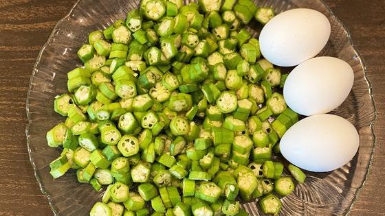

📍 San Jose: 65° / 48°F, Overcast
⏱ ~73 min reading
130 items
|
The Morning Brief
Executive Personal Intelligence Briefing
|
Saturday, October 31, 2026
Sunrise 07:31 · Sunset 18:10 · AQI 56 · Moon: Last quarter, 69% lit
|
|
Executive Synthesis: Wall Street closes October lower on a deepening tech rout, while Iran offers a Hormuz reopening timeline, agent builders get trajectory evaluation and parallel GEPA optimizations, and Sindhu and Sen reach Saarbrücken finals.
Keto Kitchen
Daily Keto Protocol (Net Carbs: 20.1g / 25g)
| Net Carbs |
Protein |
Healthy Fats |
Total Calories |
| 20.1g |
72g |
64g |
953 kcal |
breakfast
Andhra · Heat 4/5 · 20m
Tender rounds of okra are pan-roasted in ghee until their stickiness evaporates into crisp edges, then four eggs whisked with turmeric and Guntur karam are folded in for a rich, spicy scramble.
5.9g net carbs ·
15g protein ·
17g fat ·
247 kcal ·
Serves 2
● Fat 65%
● Protein 25%
● Net Carbs 10%
Ladies finger and egg stirfry #bhindi #egg #food #recipe #foodpreparation #foodie #cooking #healthy — Nimshas Kitchen
Ingredients
-
eggs, shelled and whisked
4 large eggs · 200g
-
fresh okra (bendakaya), sliced thin 0.5 cm rounds
about 1 cup sliced · 100g
-
ghee
1 tbsp · 14g
-
mustard seeds
1/4 tsp · 1g
-
cumin seeds
1/2 tsp · 1g
-
urad dal
1/2 tsp · 2g
-
dried red chilli, broken
1 chilli · 1.5g
-
fresh curry leaves
10-12 leaves · 1.5g
-
onion, finely chopped
1 tbsp · 15g
-
green chilli, finely slit
2 small chillies · 6g
-
garlic, minced
2 cloves · 4g
-
turmeric powder
1/4 tsp · 0.8g
-
Guntur red chilli powder
1/2 tsp · 2g
-
coriander powder
1/2 tsp · 2g
-
fresh coriander leaves, chopped
1 tbsp · 4g
-
salt
1/2 tsp · 3g
Method
- Rinse okra thoroughly and wipe completely dry with a clean kitchen towel before slicing into 0.5 cm thin rounds; dry pods prevent stickiness.
- Heat ghee in a wide heavy kadai over medium heat. Add mustard seeds, cumin seeds, urad dal, and broken dried red chilli; fry 30 seconds until mustard crackles and dal turns golden.
- Add minced garlic, slit green chillies, and curry leaves; stir for 15 seconds until the curry leaves stop spluttering. Add finely chopped onion and saute 2 minutes until translucent.
- Add the sliced okra and turmeric powder. Cook uncovered on medium-high for 5 minutes, stirring occasionally, until all mucilage evaporates and the okra rounds turn lightly browned at the edges.
- Whisk the eggs in a small bowl with salt, Guntur red chilli powder, and coriander powder. Lower heat to medium-low and pour the egg mixture directly over the fried okra.
- Let the eggs sit undisturbed for 20 seconds to set on the bottom, then fold gently with a spatula from edges to centre for 2 minutes into large, tender curds. Remove from heat while still succulent and garnish with chopped fresh coriander.
🌉 US & Bay Area Ingredient Adaptations
-
Fresh tender okra (bendakaya): Fresh okra from Trader Joe's or Safeway; or frozen cut okra thawed and patted thoroughly dry with paper towels
Where to buy in the Bay Area: Patel Brothers (Santa Clara) or New India Bazaar (Sunnyvale) for crisp young pods
-
Fresh curry leaves: Frozen curry leaves thawed 1 minute in warm water
Where to buy in the Bay Area: Patel Brothers (Santa Clara) or New India Bazaar (Sunnyvale)
-
Guntur red chilli powder: Extra hot Indian red chilli powder or 3:1 mix of cayenne pepper and smoked paprika
Where to buy in the Bay Area: Any South Asian grocer in Santa Clara or Sunnyvale
Make it taste like home
- Taste tip: Always wipe every okra pod bone-dry before slicing and saute uncovered on medium-high; any trapped moisture encourages sliminess.
- Keto tip: Weigh the okra and onion accurately; keeping okra to 50 g and onion to 7.5 g per serving keeps this spicy scramble at just 5.9 g net carbs.
- Heat dial 4: Use 1 green chilli and 1 g chilli powder for mild heat dial 2; add another green chilli for fiery heat dial 5.
Keto Swaps & Variations
- Swap okra with 100 g tender ridge gourd (beerakaya) or finely shredded green cabbage.
- Use coconut oil instead of ghee for a dairy-free version.
lunch
Guntur · Heat 4/5 · 22m
Succulent wild prawns are flash-seared and roasted in fragrant groundnut oil with caramelized onions, curry leaves, crushed black pepper, and fiery Guntur karam until the thick masala clings to each prawn in a deep mahogany crust.
4.6g net carbs ·
31g protein ·
12g fat ·
252 kcal ·
Serves 2
● Fat 43%
● Protein 50%
● Net Carbs 7%
బెస్ట్ ప్రాన్స్ ఘీ రోస్ట్ | Best Prawns Ghee roast | Royyala Vepudu |Prawns Fry recipe @VismaiFood — Vismai Food
Ingredients
-
raw prawns, shelled and deveined
about 16-18 prawns · 300g
-
groundnut oil
1 tbsp · 14g
-
ghee, for finishing
1/2 tbsp · 7g
-
cumin seeds
1/2 tsp · 1g
-
fresh curry leaves
14-16 leaves · 2g
-
dried red chilli, torn
1 chilli · 1.5g
-
onion, finely diced
about 2 tbsp · 30g
-
ginger, freshly grated
1 tsp · 5g
-
garlic, minced
2 cloves · 5g
-
green chilli, slit lengthwise
2 small chillies · 6g
-
turmeric powder
1/4 tsp · 0.8g
-
Guntur red chilli powder
3/4 tsp · 2.5g
-
coriander powder
3/4 tsp · 2.5g
-
garam masala
1/2 tsp · 1.5g
-
black pepper, freshly coarse-crushed
1/2 tsp · 1.2g
-
fresh lemon juice
1.5 tsp · 6g
-
fresh coriander leaves, chopped
1 tbsp · 5g
-
salt
1/2 tsp · 3g
Method
- Pat peeled prawns completely dry with paper towels, then toss in a small bowl with turmeric powder, half the ginger-garlic, half the salt, and 1/2 tsp lemon juice; marinate 5 minutes.
- Heat groundnut oil in a heavy kadai over medium-high heat. Add cumin seeds and torn dried red chilli; fry for 20 seconds until fragrant and cumin turns dark golden.
- Add remaining ginger-garlic, slit green chillies, and curry leaves; saute 20 seconds until leaves crackle. Add diced onion and fry 4 minutes until deeply browned at the edges.
- Add Guntur red chilli powder, coriander powder, and garam masala; stir vigorously for 15 seconds on medium-low so the spices bloom in the hot oil without scorching.
- Raise heat to medium-high and add the prawns in a single layer. Sear 2 minutes without moving, then flip and saute 3 minutes as moisture evaporates and masala clings tightly.
- Scatter crushed black pepper, drizzle finishing ghee, and toss briskly for 1 minute until the masala forms a glossy, dark clinging roast. Remove from heat, stir in lemon juice and chopped coriander, and rest 2 minutes before serving.
🌉 US & Bay Area Ingredient Adaptations
-
Raw tiger prawns (royyalu): Peeled, deveined raw shrimp (21/25 or 16/20 count) from Costco or Trader Joe's freezer aisle; thaw thoroughly and pat dry
Where to buy in the Bay Area: 99 Ranch Market (San Jose or Cupertino) for wild prawns; Costco for wild Argentinian red shrimp
-
Fresh curry leaves: Frozen curry leaves
Where to buy in the Bay Area: Patel Brothers (Santa Clara) or New India Bazaar (Sunnyvale)
-
Groundnut oil (verusenaga nune): Pure unrefined peanut oil, or avocado oil
Where to buy in the Bay Area: Safeway or Trader Joe's for peanut/avocado oil; South Asian grocers for cold-pressed groundnut oil
Make it taste like home
- Taste tip: Coarsely crushed black pepper added in the final minute gives the signature coastal Andhra vepudu punch without muddying the red chilli heat.
- Keto tip: Prawns are pure lean protein; keeping the diced onion to 30 g gives rich roasted masala sweetness while holding lunch to only 4.6 g net carbs.
- Heat dial 4: Reduce Guntur chilli powder to 1.5 g and black pepper to 0.5 g for mild heat dial 2; add another green chilli for heat dial 5.
Keto Swaps & Variations
- Omit finishing ghee for a completely dairy-free seafood roast.
- Swap prawns for 300 g boneless chicken thigh pieces (extend cooking time by 4 minutes).
dinner
Andhra · Heat 4/5 · 22m
Fresh chopped tender spinach is simmered in a garlicky Andhra talimpu with cumin, green chillies, and Guntur spices, then golden pan-seared paneer cubes are folded in to soak up the vibrant, spiced green gravy.
9.6g net carbs ·
26g protein ·
35g fat ·
454 kcal ·
Serves 2
● Fat 69%
● Protein 23%
● Net Carbs 8%
palak paneer | రెస్టారంట్ స్టైల్ పాలక్ పనీర్ | Restaurant Style Palak Paneer In telugu @ vismai food — Vismai Food
Ingredients
-
paneer, cut into 1.5 cm cubes
about 1 cup cubed · 220g
-
fresh spinach (palakura), washed and finely chopped
about 4 cups chopped · 180g
-
ghee
1 tbsp · 14g
-
mustard seeds
1/4 tsp · 1g
-
cumin seeds
1/2 tsp · 1g
-
dried red chilli, broken
1 chilli · 1.5g
-
fresh curry leaves
12-14 leaves · 2g
-
onion, finely chopped
about 2 tbsp · 25g
-
garlic, finely minced
2 cloves · 5g
-
ginger, freshly grated
1 tsp · 4g
-
green chilli, slit lengthwise
2 small chillies · 6g
-
turmeric powder
1/4 tsp · 0.8g
-
Guntur red chilli powder
1/2 tsp · 2g
-
coriander powder
1/2 tsp · 2g
-
garam masala
1/3 tsp · 1.2g
-
fresh lemon juice
1 tsp · 5g
-
fresh coriander leaves, chopped
1 tbsp · 4g
-
salt
1/2 tsp · 3g
Method
- Melt half the ghee (7 g) in a kadai over medium heat. Add cubed paneer and pan-sear 2 to 3 minutes, turning gently until edges are pale golden; transfer to a plate.
- Add remaining ghee (7 g) to the pan. Add mustard seeds, cumin seeds, and broken dried red chilli; fry 20 seconds until mustard crackles and cumin sizzles.
- Add minced garlic, grated ginger, slit green chillies, and curry leaves; saute 25 seconds until fragrant and garlic turns light golden. Add chopped onion and cook 3 minutes until translucent.
- Stir in turmeric powder, Guntur red chilli powder, coriander powder, and salt for 15 seconds. Immediately add the chopped spinach in handfuls, stirring as it wilts down into the spiced aromatics.
- Pour in 50 ml water, cover with a tight lid, and simmer on medium-low for 4 minutes until spinach is tender. Uncover, mash gently with the spatula to create a rustic clinging texture, and stir in garam masala.
- Fold the seared paneer cubes into the simmering spinach. Simmer uncovered on low for 2 minutes to let the paneer absorb the savoury green juices. Finish with lemon juice and chopped coriander, rest 3 minutes, and serve.
🌉 US & Bay Area Ingredient Adaptations
-
Fresh Indian spinach (palakura): Organic mature spinach bunches (tender stems included) or baby spinach from Trader Joe's, Costco, or Safeway
Where to buy in the Bay Area: Patel Brothers (Santa Clara) or New India Bazaar (Sunnyvale) for desi palakura; Safeway/Sprouts for fresh flat-leaf spinach
-
Fresh block paneer: Nanak or Haldiram's malai paneer block, or Verka paneer from Costco or Patel Brothers
Where to buy in the Bay Area: Costco (Santa Clara / Sunnyvale carries Nanak paneer in 2-packs); Patel Brothers or New India Bazaar
-
Fresh curry leaves: Frozen curry leaves
Where to buy in the Bay Area: Patel Brothers (Santa Clara)
Make it taste like home
- Taste tip: Chopping the spinach fine rather than pureeing it creates the rustic Andhra kura texture that lets the garlic-curry leaf talimpu shine.
- Keto tip: Full-fat paneer delivers 25.8 g protein and 34.6 g wholesome dairy fats, keeping hunger satiated all evening with only 9.6 g net carbs.
- Heat dial 4: Use 1 green chilli and 1 g chilli powder for heat dial 2; add an extra pinch of black pepper and slit chilli for heat dial 5.
Keto Swaps & Variations
- Swap paneer for 220 g firm tofu pressed dry for a vegan option.
- Add 2 tbsp unsweetened canned coconut milk at step 5 for extra coastal creaminess.
Keto science and tips
 Managing Ketogenic Diet-Induced Hypercholesterolemia
Managing Ketogenic Diet-Induced Hypercholesterolemia
—
Cardiologists at UC San Diego outline a clinical protocol in JACC for managing ketogenic diet–induced hypercholesterolemia. The authors distinguish between patients with obesity or diabetes—who show modest LDL changes alongside robust triglyceride reductions—and lean, insulin-sensitive individuals whose LDL-C can exceed 190 to 300 mg/dL. Rejecting assumptions that diet-induced LDL rises are harmless, they recommend sequentially replacing saturated fats with monounsaturated and polyunsaturated oils before considering moderate carbohydrate reintroduction (50–100 g/day), using coronary CT angiography to assess noncalcified plaque progression.
Takeaway: Directly relevant to your keto nutrition goals and lipid tracking, offering an evidence-backed framework for managing LDL-C changes through dietary fat swaps without abandoning low-carbohydrate principles.
Dietary fiber content in clinical ketogenic diets modifies the gut microbiome and seizure resistance in mice
—
Research from UCLA demonstrates that dietary fiber content, rather than fat ratio or fat source, governs gut microbial structure and functional potential during ketogenic diets. Testing 13 distinct dietary fibers in ketogenic formulations revealed that prebiotic fibers—specifically inulin, fructooligosaccharides, and psyllium husk—enriched microbial pathways for queuosine and preQ0 biosynthesis while preserving beneficial taxa without interrupting ketosis. Conversely, oral short-chain fatty acid supplementation failed to replicate these benefits, showing that intact fermentable fibers are essential for gut microbial resilience on carbohydrate-restricted diets.
Takeaway: Informs your gut health and fibre targets on keto by demonstrating how incorporating psyllium husk and non-starchy vegetable fibres preserves microbiome diversity without disrupting nutritional ketosis.
Indian Food on a Low Carb or Ketogenic Diet
—
Medically reviewed by Dr. Frank Dumont at Virta Health, this clinical dietary guide details how to navigate Indian festive dining and cultural meals while sustaining nutritional ketosis. The guide explains practical ingredient substitutions for high-carb staples—using seasoned cauliflower rice for biryani, almond flour and hung curd for keto dosas, and prioritizing paneer and tandoori proteins. It also provides formulation strategies for traditional sweets such as coconut barfi, sugar-free kaju katli, and almond flour badampuri using non-glycemic sweeteners and ghee, allowing cultural adherence without precipitating blood glucose spikes.
Takeaway: Ties directly to your keto Andhra cooking and festive dining goals, providing tested ingredient substitutions and sugar-free sweet recipes to navigate cultural gatherings without exiting ketosis.
Watch
Must Watch | ఆదివాసీ చేపల వేపుడు సీక్రెట్ తెలిస్తే వెంటనే ట్రై చేస్తారు | Tribal Special Fish Fry
—
Vismai Food showcases a traditional Andhra tribal fish fry featuring an aromatic, flour-free marinade of soaked dried gooseberries, coarse black pepper, garlic cloves, and roasted fenugreek powder. Marinated fish pieces are shallow-roasted on a hot tawa in cold-pressed coconut oil with fresh curry leaves until crisp and dark golden, delivering authentic coastal flavor with negligible carbohydrates.
Takeaway: An authentic zero-carb Andhra pan-fry technique using coconut oil and traditional tempering, perfectly suited to your strict-keto Andhra rotation.

Simple & Tasty BENDAKAYA KODIGUDDU Porutu Recipe | Bendakaya Egg Fry | Ladies fingers Egg Fry Recipe
—
HomeChef Telugu demonstrates an authentic Andhra bendakaya kodiguddu porutu, pairing finely sliced young okra with whisked eggs and fragrant tempering. Sliced okra is sauteed in ghee until all stickiness evaporates and edges crisp up, after which seasoned eggs are folded through for a dry, savory scramble that provides high protein with low net carbohydrates.
Takeaway: Complements today's breakfast recipe for bendakaya guddu porutu in your strict-keto Andhra cooking rotation.